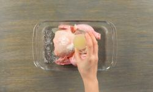
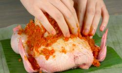
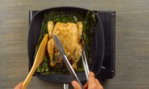
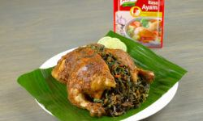

Resep makanan ayam betutu khas bali
bahan bahan
- 1 ekor ayam
- 2 sdm air jeruk
- 1 std garam
- 2 sdm minyak,untuk menumis
- 2 batang serai,iris tipis
- sdt royko kaldu ayam
- 200 g daun singkong,rebus
- 4 lembar daun jeruk dan daun pisng
bumbu halus
- 8 butir bawang merah
- 6 siung bawang putih
- 12 buah cabai merah keriting
- 2cm kunyit bakar
- sdt ketumbar butiran
- 2 cm jahe parut
- 2 cm lengkuas parut
- 1 std garam
- 1 std gula merah
- 1 sdt minyak
CARA MEMBUAT
- Lumuri ayam utuh dengan garam dan jeruk nipis secara merata. Diamkan hingga meresap selama kurang lebih 15 menit. Sisihkan.

- Lumuri sisa bumbu halus ke seluruh permukaan ayam secara merata. Bungkus dengan daun pisang. Kukus selama 45 menit. Angkat.

- Panggang di atas wajan pemanggang dengan alas daun pisang hingga kecokelatan. Belah ayam memanjang dua bagian.

- Sajikan.

kujungi